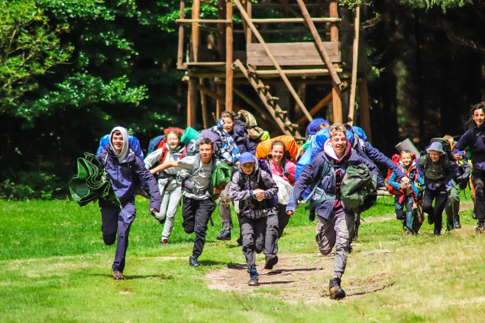

Oddíl ROJ
O nás
- Jsme pražský dětský tábornický oddíl Roj, přijímáme děti ve věku od 7 do 14 let.
- Během léta pořádáme třítýdenní tábor na tradičním místě ve Vlčí jámě u Dolního Radíkova v srdci České Kanady, kam jezdíme již přes 40 let.
- Během roku pořádáme o víkendech několikrát do měsíce akce jako vícedenní výpravy, jednodenní výpravy a odpolední akce. Jejich přehled najdete na stránce Akce.
- S dalšími třemi oddíly jsme součástí tábornického klubu Modrý Kruh a patříme do České tábornické unie.
- Podporuje nás hlavní město Praha a Ministerstvo školství, mládeže a tělovýchovy České republiky.